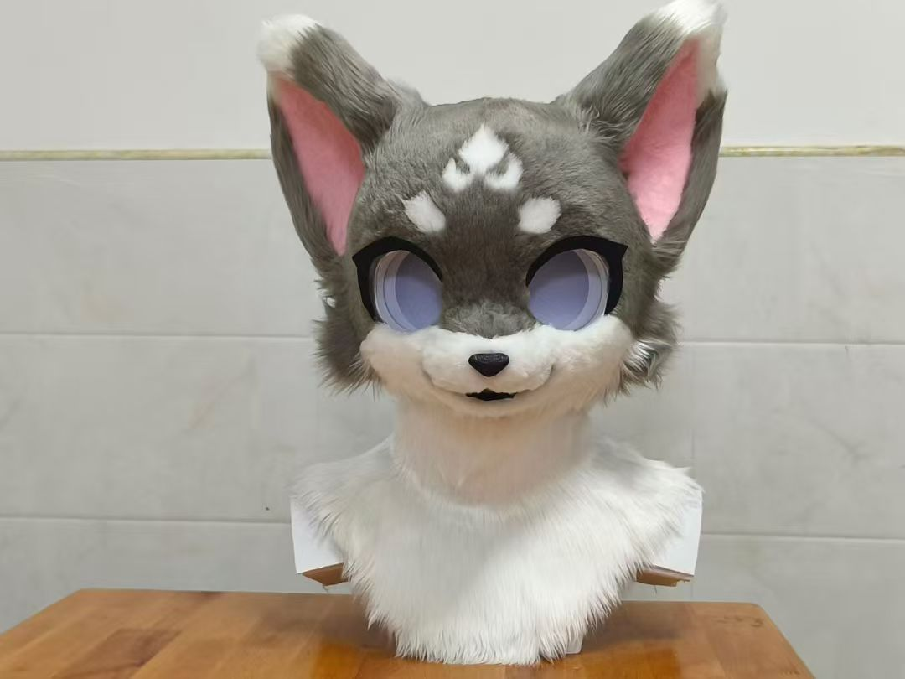
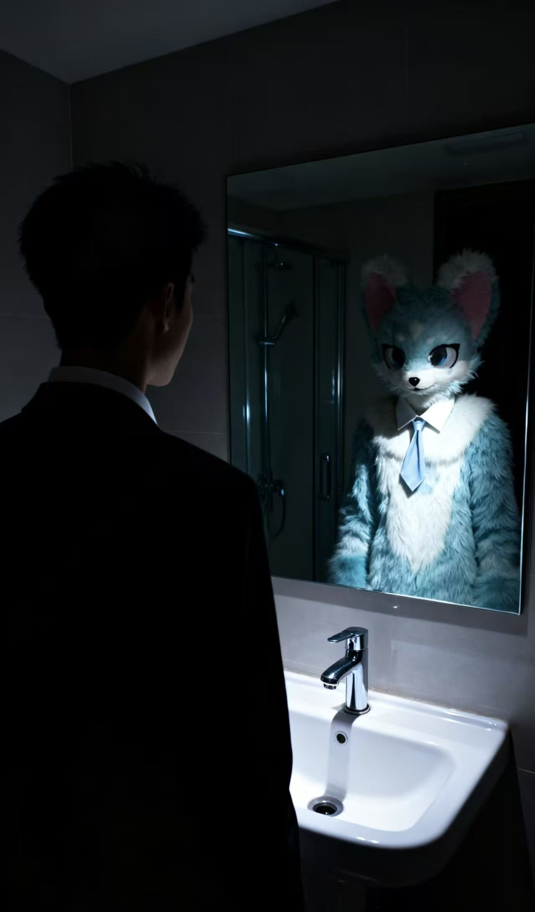
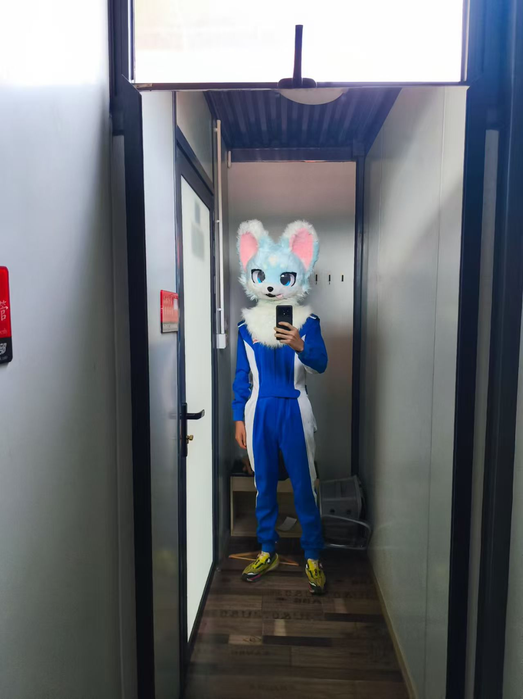
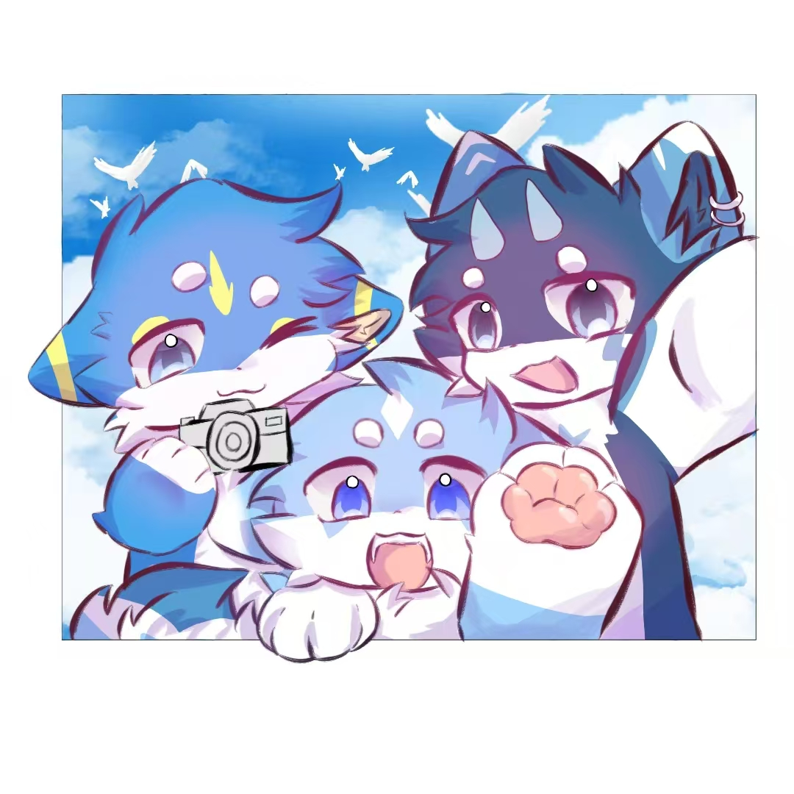

我的故事
我的入圈故事日子在琐碎与压力中疾行，心尖总缺一角柔软。直到那个倦怠午后，漫展镜头里的“毛茸茸”撞入眼底——银白鬃毛缀浅蓝尾尖，琥珀眼片藏着星辰，蓬松爪尖轻晃，耳尖随姿态耷拉，纯粹的快乐无需言语，便漫过屏幕浸润心房。
原来，兽装是用面料与匠心织就的温柔载体，让日常面具下的情绪得以舒展。我沉溺于这份创作的魔力，在图纸上勾勒版型，于面料中甄选绒毛，渴望亲手打造专属的“第二身份”。而这份热爱最珍贵的馈赠，是遇见了木京与蔚蓝。
木京是化平面为立体的匠人，绒毛疏密、眼片弧度、可动结构皆经他手焕活，他镜头下兽装与自然相融的光影，是我不竭的灵感源泉；蔚蓝是万能修理师，似乎关于电器的维修，皆能被他轻松化解。我们三人围坐，切磋版型优化，分享缝制技巧，攻克机械难关，在陪伴中我的手艺日渐精进，三个兽头相继诞生——每一针线都藏着专注与热忱，每一次调试都盛满成就感。
如今工作台前，绒毛、眼片、丝线相映，兽头静静陈列，聊天记录里满是共创的热忱。Furry于我，早已不是单纯的可爱符号，是匠心淬炼的执着，是挚友相伴的温暖，是快节奏生活里的精神栖息地。
期待那日，身着亲手缝制的完整兽装，与木京、蔚蓝相约漫展。让镜头定格并肩的身影，让巧手护航顺畅的互动，任蓬松绒毛拂去疲惫，让热爱、情谊与荣光，在阳光下无限蔓延。
我喜欢的图片

喜欢的图片1

喜欢的图片2

喜欢的图片3
我的好朋友

我的好朋友
联系方式
微信：lanjill2026
QQ：1768332038
抖音：dyb1bw7r1t9o
快手：2324331700